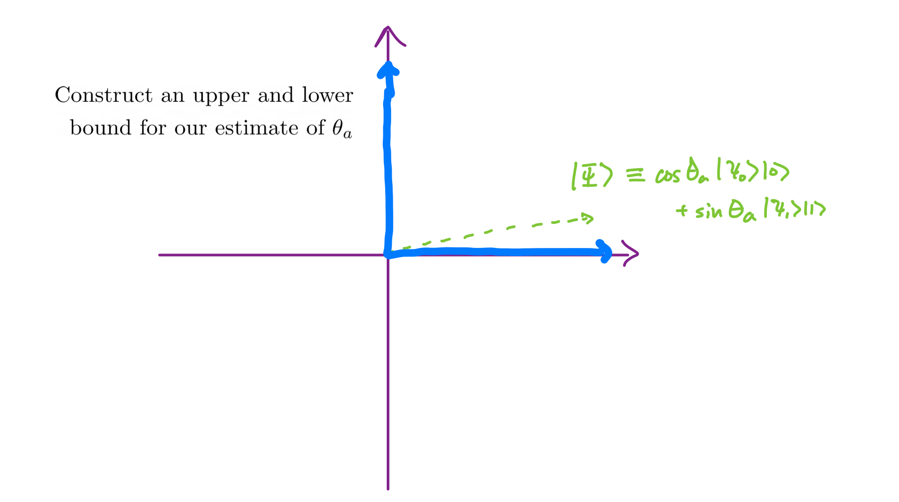
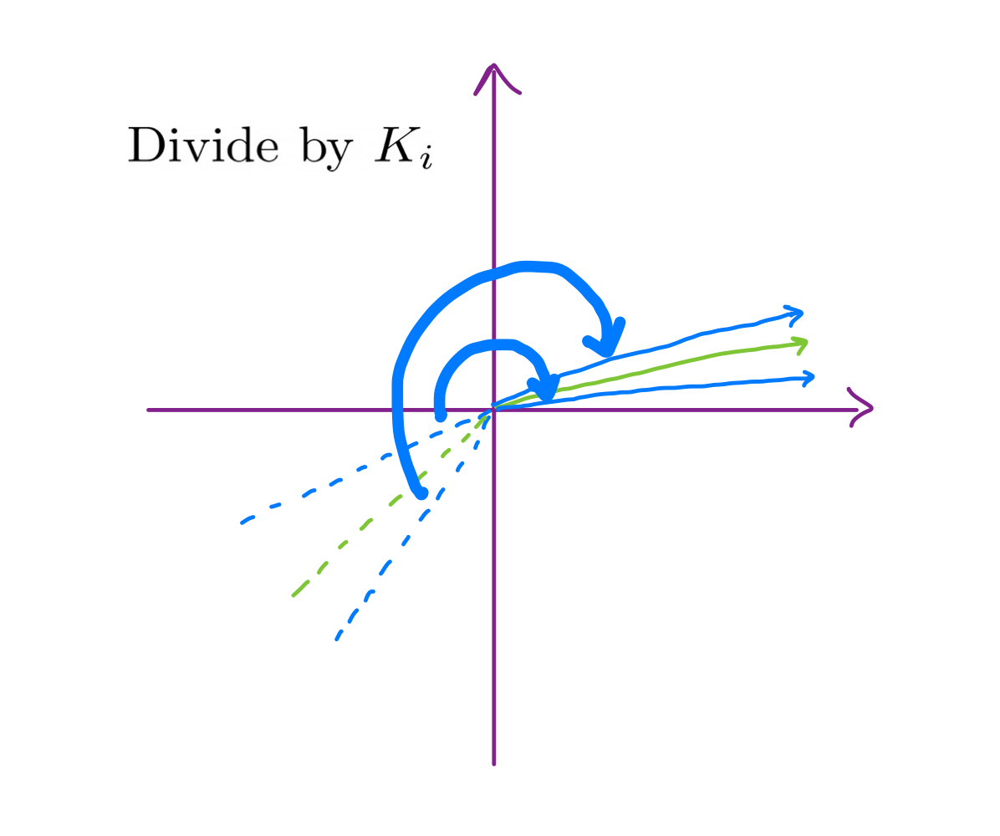

Suppose we are given a black box to evaluate some boolean function \(f\) that takes \(n\) bits as input. We would like to give an estimate as to how many of the possible input strings evaluate to 1. We will call an input that outputs 1 a success. Now it’s possible to take our function and go through all possible inputs, but this would require \(2^n\) evaluations of the function.
Let’s say we decide that it’s not worth going through all possibilities, and we can settle for an approximate estimate of how many input strings are successful. One strategy we might use to accomplish this is by picking a random bit string and checking if it’s successful or not. After some \(n\) trials, we will have a record of how many of those were successful or not. What we’ve done here is model the original problem as estimating the success probability of a Bernoulli distribution, and asking how many samples we need to approximate this distribution well.
To accomplish this we can use a tool called a Chernoff bound. There are many versions of Chernoff bounds, but the one that is relevant here is the following:
\[\mathbb{P}[a \not \in [\hat{a}-\epsilon, \hat{a}+\epsilon]] \leq 2e^{-2N\epsilon^2}.\]
Here, \(a\) is the true success probability of our coin flip, \(\hat{a}\) is our estimate for \(a\) after \(N\) trials, and \(\epsilon\) is some target interval we want our estimate to lie between. Essentially what the equation is expressing is that as we take more trials, the probability that our estimate is off by more than \(\epsilon\) decreases exponentially. Let’s say we want to say that there’s a 99 percent chance that our approximation of \(a\) is within \(\epsilon\) of the correct solution. Then we can set the right hand side to 0.01 (since it bounds the failure probability) and solve for \(N\):
\[2e^{-2N\epsilon^2} = 0.01 \Rightarrow N = \frac{1}{2\epsilon^2} \log \frac{2}{0.01}.\]
Can we do any better? It turns out that if we use a quantum computer the answer is yes! The first thing we need to do is to come up with a way to evaluate the function \(f\) with our quantum computer.
It turns out that if we can implement a function with a classical circuit, we can also do so using a quantum computer by encoding the effect of the function into a unitary \(U_f\) with not too much overhead. The effect of applying this unitary can be described by the following equation:
\[U_f\left|x\right>_n\left|0\right> = \left|x\right>_n\left|f(x)\right>.\]
In words, we store the input string \(x\) in the first register, and after applying our unitary the result of evaluating \(f\) with input \(x\) is stored in the second register.
Now let’s see what happens when we apply this unitary when the first register is in uniform superposition, which we can accomplish by applying a Hadamard gate to each qubit we have.
\[U_f H^{\otimes n} \left|0\right>_n \left|0\right> = \sum_{x\in \{0,1\}^n}U_f\left|x\right>_n\left|0\right> = \sum_{x\in \{0,1\}^n} \left|x\right>_n\left|f(x)\right>.\]
Now we have all input output pairs of our function stored in superposition, which we were able to prepare with just one call to our unitary \(U_f\). There is still a small problem, namely that we need to measure from the quantum computer to get a result, and measuring will collapse our superposition state into the result we observe. If this was all we could do, we haven’t improved at all from the classical setting, we just made a more contrived Bernoulli sampling problem.
In the remaining sections, I’ll describe one way to speed up the process with a quantum computer that came about through joint work with Sandy Irani, Chris Ho, and Jasen Zion. Currently, this is provably the most efficient way to solve the problem that is known.
Problem Statement
Before getting into the details of the algorithm, it’ll be helpful to restate the problem a little more formally. The most common way this problem is presented in the literature is the following.
Suppose we are given an unknown quantum operator \(A\) that acts on \(n + 1\) qubits as follows:
\[A \left|0\right>_n\left|0\right> = \sqrt{1-a} \left|\psi_0\right>_n\left|0\right> + \sqrt{a}\left|\psi_1\right>_n \left|1\right>.\]
The question is, how many times do we need to apply \(A\) to have an estimate of \(a\) within some target precision \(\epsilon\), with failure probability less than \(\alpha\).
If we model the classical setting of this problem with a quantum computer, what we do is prepare the state described above and take a measurement right away. This requires \(O\left(\frac{1}{\epsilon^2} \log \frac{2}{\alpha}\right)\) samples to solve the problem, as we showed using the Chernoff bounds above.
Using a procedure called amplitude amplification, we can accomplish the same estimate with \(O\left(\frac{1}{\epsilon} \log \frac{2}{\alpha}\right)\), a quadratic improvement over the classical procedure.
Amplitude Amplification
I’m going to rewrite our state as follows:
\[A\left|0\right>_n \left|0\right> = \sqrt{1-a}\left|\psi_0\right>\left|0\right> + \sqrt{a}\left|\psi_1\right>\left|1\right>.\]
\[\Downarrow\]
\[A\left|0\right>_n \left|0\right> = \cos{\theta} \left|\psi_0\right>\left|0\right> + \sin{\theta} \left|\psi_1\right>\left|1\right>,\]
where I’m defining \(\theta\) as the angle such that \(\sin^2 \theta = a\). Since \(\left|\psi_0\right>\left|0\right>\) and \(\left|\psi_1\right>\left|1\right>\) are orthogonal subspaces, I can draw this state as follows:
An early result for this algorithm was that if we have our operator \(A\), it’s possible to construct a new operator \(Q\) which is a combination of two actions: 1. Reflect the state across the \(x\) axis, and 2. Reflect the state across the starting state.
What’s neat about doing this is that now our success probability has increased from \(\sin^2(\theta)\) to \(\sin^2(3\theta)\). More generally, if we apply this operator \(k\) times we can boost the success probability up to \(\sin^2((2k+1)\theta)\).
This technique is used quite often in quantum algorithms, and has been a key tool in many results that achieve a quadratic speedup over classical algorithms.
Algorithm
We’re now ready to dive into the algorithm, which is actually quite simple once you followed everything up to here. There are two phases to the algorithm.
Main phase
In the main phase, we maintain some guess of the interval we believe \(\theta\) lies in. Initially, we know for certain that the angle lies somewhere between \(0\) and \(\pi/2\), so that will be our starting interval. Recall that we defined \(\theta\) such that \(\sin^2 \theta = a\). We can use this fact to take our interval containing \(\theta\) and map it to an interval containing \(a\). Now we take samples from our quantum circuit to construct our approximation for \(a\), and we can use the Chernoff bound to shrink our confidence interval. Once we’ve shrinken the interval a certain amount, we can now take our new bounds for the interval containing \(a\), and construct an interval containing \(\theta\).

What we don’t want to do is take samples until the interval has shrunk to the accuracy we want, since that would be identical to the classical algorithm. Instead, what we use is the fact that early samples help gain more information than later samples do. Once the returns of information gain from a single sample is lower than some threshold, we move on to the second phase.
FindNextK
In the second phase of the algorithm, we use amplitude amplification to generate a new distribution, such that the information we gain from the samples increases again.
The procedure is called FindNextK, since we are looking for the best number of times \(k\) to apply our amplitude amplification operator \(Q\), so that we can gain useful information from our samples.
Geometrically, all we are trying to do is to scale up our confidence interval for \(\theta\) such that 1. it is as wide as possible, and 2. it is fully contained within one quadrant.
We want 1 because the wider this interval is, the more information we can obtain using a small number of samples, and we want 2 because we need to be able to invert the function \(\sin^2\) unambiguously.
Once we’ve found the best next \(k\) value, we simply run the main phase of the algorithm for this distribution until we decide we should find a new \(k\) again.

And that’s it! The following diagram describes the whole algorithm:
The key technical challenge is figuring out the best time to start finding the next value of \(k\). One thing that we observed and used is that the circuit is much simpler for small values of \(k\), and the depth grows very fast throughout the algorithm. Because of this, we argued that it is optimal to try to spend a bit more time on early samples, so that a smaller number of samples is sufficient towards the end of the algorithm when the circuit is very expensive to prepare.